Chapter 4 R语言ggplot2柱形图
4.1 最基本的柱形图需要准备的数据
一列x一列y
- 如果柱子垂直 x是离散型数据 y是连续型数据
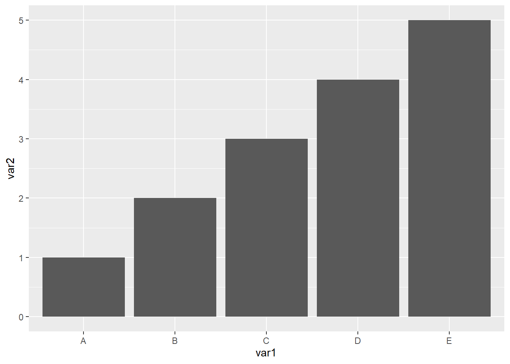
- 如果想要水平的柱子，就把y设置成离散数据，x设置成连续数据
- 数据集
| var1 | var2 |
|---|---|
| A | 1 |
| B | 2 |
| C | 3 |
| D | 4 |
| E | 5 |
读取数据集
library(readxl)
dat01<-read_excel("example_data/04-barplot/dat01.xlsx")
head(dat01)## # A tibble: 5 x 2
## var1 var2
## <chr> <dbl>
## 1 A 1
## 2 B 2
## 3 C 3
## 4 D 4
## 5 E 5作图代码
柱形图的函数有
geom_col()和geom_bar(),具体有什么区别我没有仔细研究过，我自己习惯用geom_col()函数，做堆积柱形图和簇状柱形图的时候会使用geom_bar()函数
柱形图可以修改的参数分别是
color对应柱子的边框颜色size对应是边框的粗细fill对应柱子的填充颜色alpha对应的是柱子填充颜色的透明度，取值是0到1之间width对应柱子的宽度
看如下代码的效果，你可以试着更改每个参数的值
library(readxl)
dat01<-read_excel("example_data/04-barplot/dat01.xlsx")
head(dat01)## # A tibble: 5 x 2
## var1 var2
## <chr> <dbl>
## 1 A 1
## 2 B 2
## 3 C 3
## 4 D 4
## 5 E 5library(ggplot2)
ggplot(data=dat01,aes(x=var1,y=var2))+
geom_col(color="red",size=3,
fill="blue",alpha=0.5,
width = 0.2)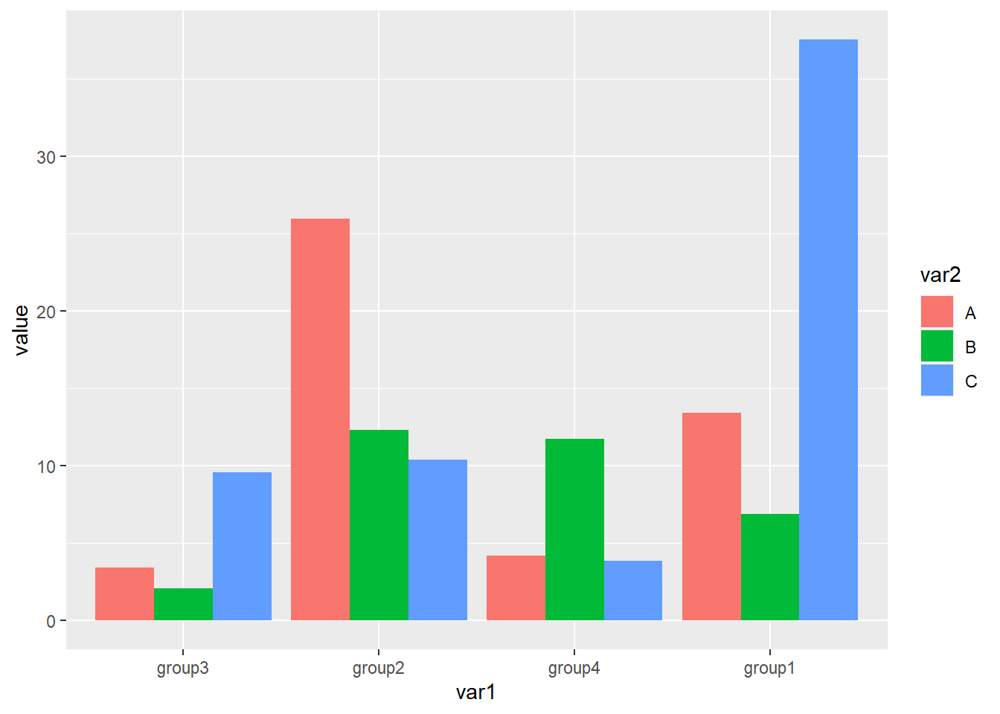
如果统一修改边框颜色，填充颜色这些属性，比如上面的例子，5个柱子全都设置成一样的。如果想要
4.2 簇状柱形图
参考链接 https://r-graph-gallery.com/48-grouped-barplot-with-ggplot2.html
数据格式如下
| var1 | var2 | value |
|---|---|---|
| group1 | A | 13.411067 |
| group1 | B | 6.884985 |
| group1 | C | 37.514516 |
| group2 | A | 25.970176 |
| group2 | B | 12.292093 |
| group2 | C | 10.388148 |
| group3 | A | 3.411084 |
| group3 | B | 2.060476 |
| group3 | C | 9.582556 |
| group4 | A | 4.190190 |
| group4 | B | 11.724548 |
| group4 | C | 3.871083 |
作图代码
library(readxl)
dat01<-read_excel("example_data/04-barplot/dat02_grouped_barplot.xlsx")
library(ggplot2)
ggplot(data=dat01,aes(x=var1,y=value))+
geom_bar(stat="identity",
aes(fill=var2),
position = "dodge")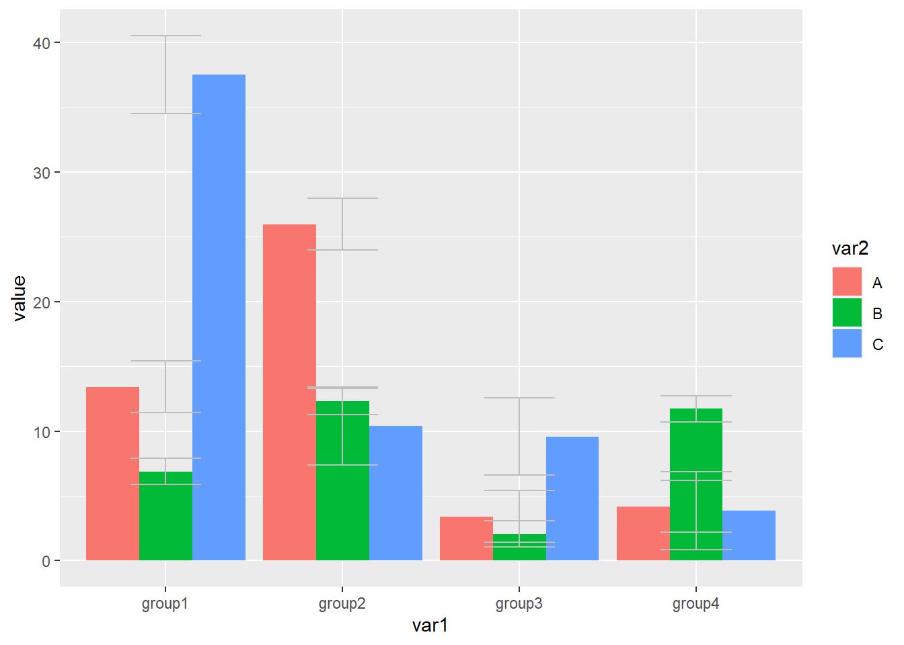
这里
stat="identity"我一直没有搞清楚是什么意思,记住是必须要写的如果不加
position="dodge"默认是堆积柱形图堆积柱形图的position应该设置为
position="stack"
簇状柱形图比较常用的修改参数是
- 不同组之前的显示顺序，默认是首字母
- 组内不同柱子的的排序，默认也是首字母
涉及到顺序的都是调节数据集的因子水平
代码
library(readxl)
dat01<-read_excel("example_data/04-barplot/dat02_grouped_barplot.xlsx")
dat01$var1<-factor(dat01$var1,
levels = c("group3","group2","group4","group1"))
library(ggplot2)
ggplot(data=dat01,aes(x=var1,y=value))+
geom_bar(stat="identity",
aes(fill=var2),
position = "dodge")
dat01$var2<-factor(dat01$var2,
levels = c("B","C","A"))
ggplot(data=dat01,aes(x=var1,y=value))+
geom_bar(stat="identity",
aes(fill=var2),
position = "dodge")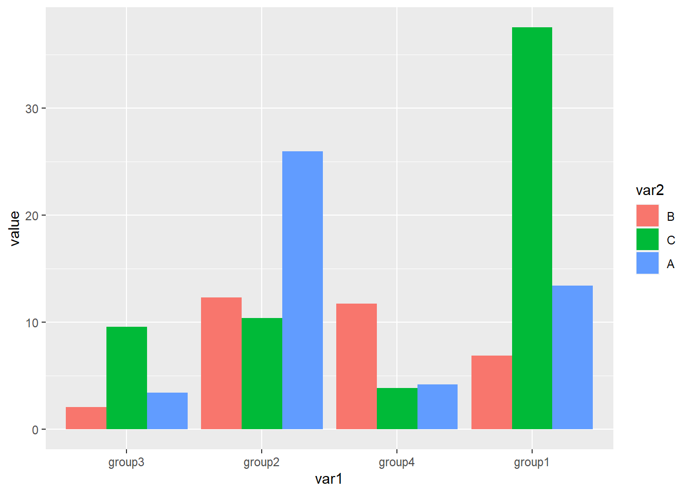
堆积柱形图还有一个经常会遇到的问题是添加误差线，现在假设我们已经把标准差算好了，整理excel里，数据格式如下，在原有数据的基础上添加一列标准差的数据
| var1 | var2 | value | sd_value |
|---|---|---|---|
| group1 | A | 13.411067 | 2 |
| group1 | B | 6.884985 | 1 |
| group1 | C | 37.514516 | 3 |
| group2 | A | 25.970176 | 2 |
| group2 | B | 12.292093 | 1 |
| group2 | C | 10.388148 | 3 |
| group3 | A | 3.411084 | 2 |
| group3 | B | 2.060476 | 1 |
| group3 | C | 9.582556 | 3 |
| group4 | A | 4.190190 | 2 |
| group4 | B | 11.724548 | 1 |
| group4 | C | 3.871083 | 3 |
- 添加误差线的函数是
geom_errorbar()
作图代码
library(readxl)
dat01<-read_excel("example_data/04-barplot/dat02_grouped_barplot_01.xlsx")
library(ggplot2)
ggplot(data=dat01,aes(x=var1,y=value))+
geom_bar(stat="identity",
aes(fill=var2),
position = "dodge")+
geom_errorbar(aes(ymin=value-sd_value,
ymax=value+sd_value))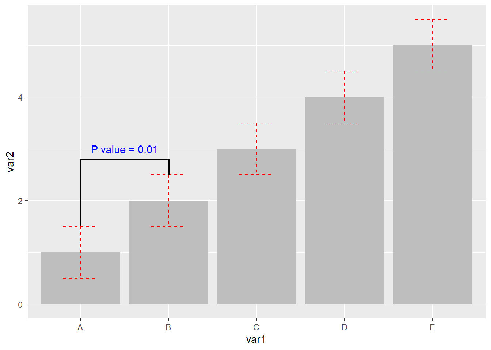
- 误差线主要的调节参数就两个，一个是width误差线的宽度，一个是color颜色
library(readxl)
dat01<-read_excel("example_data/04-barplot/dat02_grouped_barplot_01.xlsx")
library(ggplot2)
ggplot(data=dat01,aes(x=var1,y=value))+
geom_bar(stat="identity",
aes(fill=var2),
position = "dodge")+
geom_errorbar(aes(ymin=value-sd_value,
ymax=value+sd_value),
width=0.4,
color="grey")簇状柱形图的误差线全部集中在同一位置，需要我们用参数position = position_dodge(1)调节开,这里需要注意一点是如果调节误差线的位置，需要把fill=var2参数写到ggplot里，position_dodge()里面的数值具体应该设置多少我也搞不清楚，每次都要设置好几次
library(readxl)
dat01<-read_excel("example_data/04-barplot/dat02_grouped_barplot_01.xlsx")
library(ggplot2)
ggplot(data=dat01,aes(x=var1,y=value,fill=var2))+
geom_bar(stat="identity",
position = "dodge")+
geom_errorbar(aes(ymin=value-sd_value,
ymax=value+sd_value),
width=0.4,
color="blue",
position = position_dodge(0.9))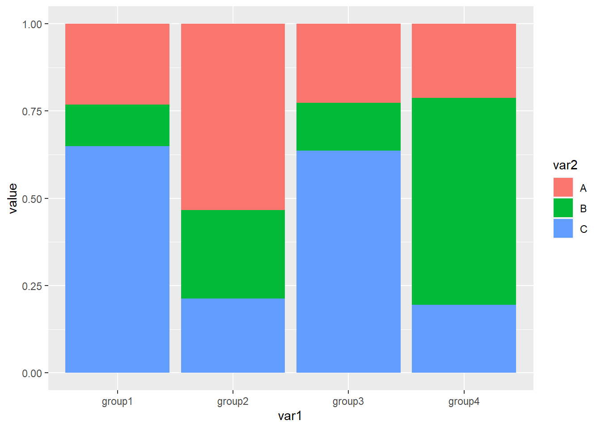
其他的美化，比如让柱子贴着底，坐标轴标签，更改默认配色等
library(readxl)
dat01<-read_excel("example_data/04-barplot/dat02_grouped_barplot_01.xlsx")
library(ggplot2)
ggplot(data=dat01,aes(x=var1,y=value,fill=var2))+
geom_bar(stat="identity",
position = "dodge")+
geom_errorbar(aes(ymin=value-sd_value,
ymax=value+sd_value),
width=0.4,
color="blue",
position = position_dodge(0.9))+
scale_y_continuous(expand=expansion(mult=c(0,0.1)))+
scale_fill_manual(values = c("A"="grey","B"="black","C"="green"))+
labs(x="AAAAA",y="BBBBB")4.2.1 接下来看每周一图里面的例子
这里 aes()的内容是可以写到作图函数里，也可以写到ggplot里，这里还是有区别的，比如上面提到的误差线的位置调节
library(readr)
success_rates<-read_csv("example_data/04-barplot/success_rates.csv")
library(ggplot2)
ggplot(success_rates) +
# add bar for each discipline colored by gender
geom_bar(aes(x = discipline, y = success, fill = gender),
stat = "identity", position = "dodge") +
# name axes and remove gap between bars and y-axis
scale_y_continuous("Success Rate", expand = c(0, 0)) +
scale_x_discrete("Discipline") +
scale_fill_manual(values = c("#468189", "#9DBEBB")) +
# remove grey theme
theme_classic(base_size = 18) +
# rotate x-axis and remove superfluous axis elements
theme(axis.text.x = element_text(angle = 90,
hjust = 1, vjust = 0),
axis.line = element_blank(),
axis.ticks.x = element_blank()) 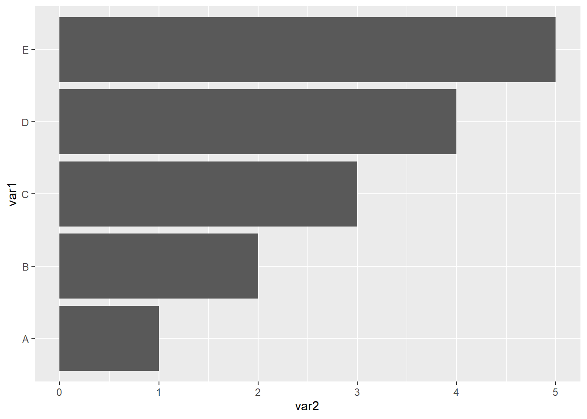
4.3 堆积柱形图
堆积柱形图和簇状柱形图的数据格式是一样的，自己的数据具体需要用堆积柱形图还是簇状柱形图自己斟酌，堆积柱形图我们只需要把簇状柱形图对应的position="dodge"改成position="stack"就可以了
dat01<-read_excel("example_data/04-barplot/dat02_grouped_barplot.xlsx")
library(ggplot2)
ggplot(data=dat01,aes(x=var1,y=value))+
geom_bar(stat="identity",
aes(fill=var2),
position = "stack")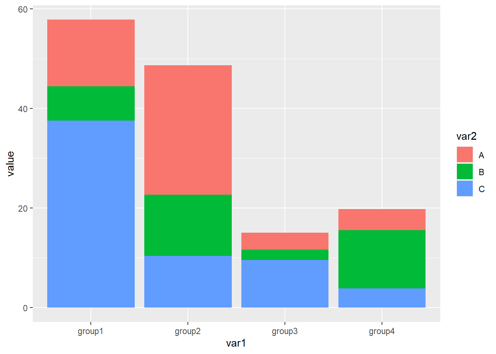
堆积柱形图有一个特点是除了展示真实数据外，还可以展示比例,需要我们把position="stack"改成position="fill"
dat01<-read_excel("example_data/04-barplot/dat02_grouped_barplot.xlsx")
library(ggplot2)
ggplot(data=dat01,aes(x=var1,y=value))+
geom_bar(stat="identity",
aes(fill=var2),
position = "fill")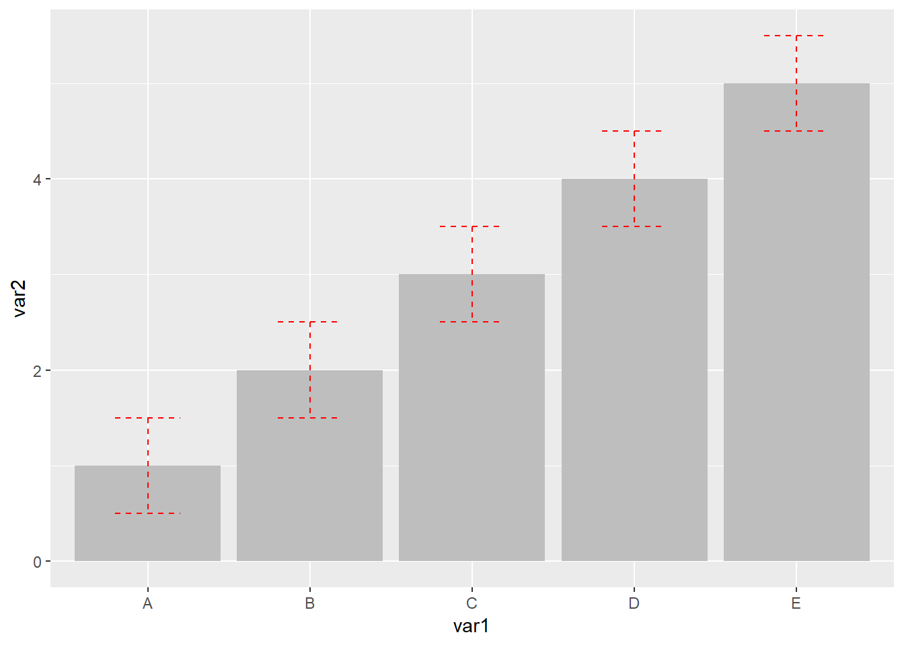
接下来就是更改柱子的顺序，和簇状柱形图调节顺序一样，只要更改原始数据的因子水平,默认的顺序是从上往下排的
library(readxl)
dat01<-read_excel("example_data/04-barplot/dat02_grouped_barplot.xlsx")
dat01$var1<-factor(dat01$var1,
levels = c("group3","group2","group4","group1"))
library(ggplot2)
ggplot(data=dat01,aes(x=var1,y=value))+
geom_bar(stat="identity",
aes(fill=var2),
position = "stack")dat01$var2<-factor(dat01$var2,
levels = c("B","C","A"))
ggplot(data=dat01,aes(x=var1,y=value))+
geom_bar(stat="identity",
aes(fill=var2),
position = "stack")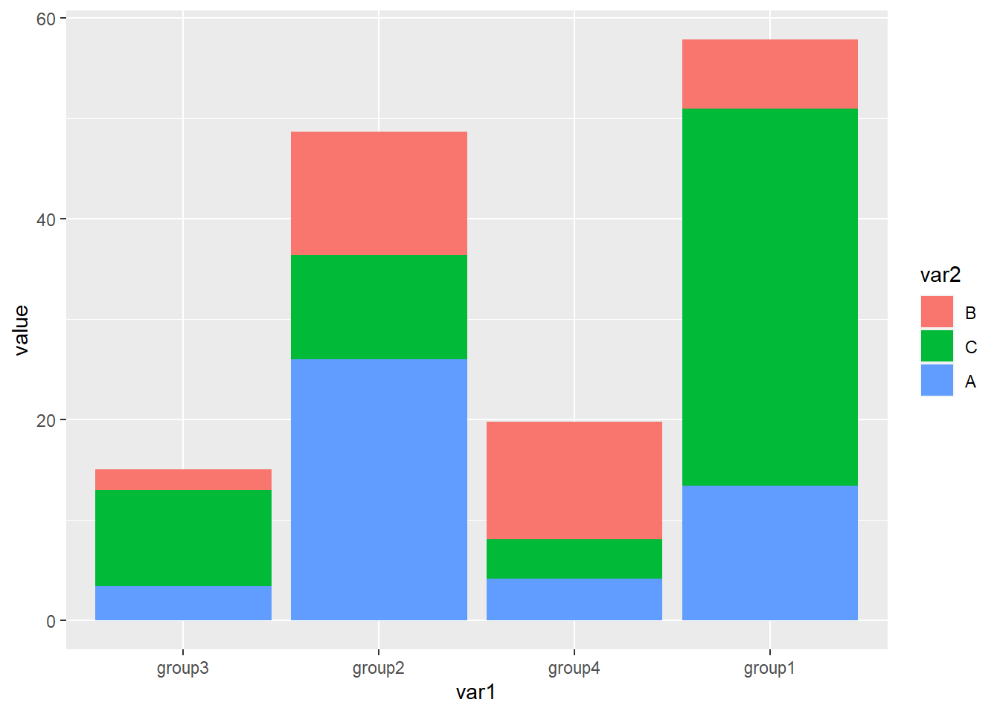
- 堆积柱形图添加误差线不常用，但也有人有这个需求，需要对原始数据有一个累加处理用来指定误差线的y坐标
library(readxl)
dat01<-read_excel("example_data/04-barplot/dat02_grouped_barplot_01.xlsx")
library(tidyverse)
dat01 %>%
group_by(var1) %>%
mutate(new_col=cumsum(value)) -> dat01
readr::write_csv(dat01,file="example_data/04-barplot/dat02_grouped_barplot_01.csv")
dat01$var2<-factor(dat01$var2,
levels = c("C","B","A"))
ggplot(data=dat01,aes(x=var1,y=value))+
geom_bar(stat="identity",
aes(fill=var2),
position = "stack")+
geom_errorbar(aes(ymin=new_col-sd_value,
ymax=new_col+sd_value),
width=0.4,
color="grey")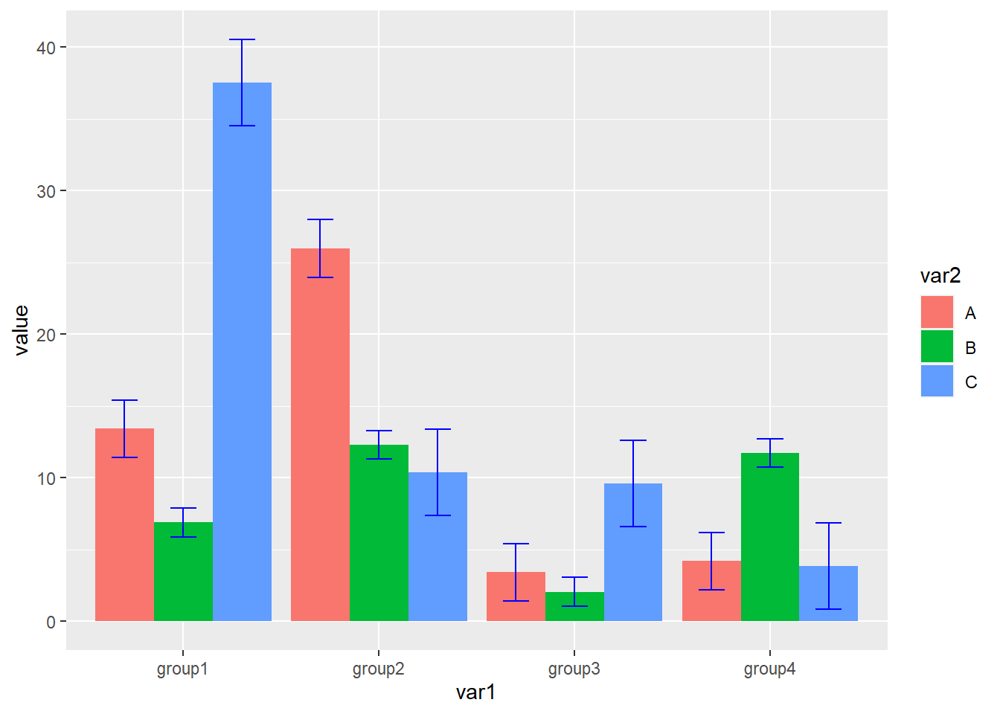
堆积柱形图还有一个经常遇到的问题是在图上添加文字，我们自数据集里添加新的列指定文本标签和文本标签的坐标,
library(readxl)
dat01<-read_excel("example_data/04-barplot/dat02_grouped_barplot_02.xlsx")
knitr::kable(dat01, "simple")| var1 | var2 | value | sd_value | text_y | text |
|---|---|---|---|---|---|
| group1 | A | 13.411067 | 2 | 45 | a |
| group1 | B | 6.884985 | 1 | 40 | b |
| group1 | C | 37.514516 | 3 | 20 | c |
| group2 | A | 25.970176 | 2 | 40 | d |
| group2 | B | 12.292093 | 1 | 18 | e |
| group2 | C | 10.388148 | 3 | 5 | f |
| group3 | A | 3.411084 | 2 | 12 | g |
| group3 | B | 2.060476 | 1 | 11 | h |
| group3 | C | 9.582556 | 3 | 5 | i |
| group4 | A | 4.190190 | 2 | 18 | j |
| group4 | B | 11.724548 | 1 | 10 | k |
| group4 | C | 3.871083 | 3 | 2 | l |
添加文本用到的函数是geom_text()
dat01<-read_excel("example_data/04-barplot/dat02_grouped_barplot_02.xlsx")
library(ggplot2)
ggplot(data=dat01,aes(x=var1,y=value))+
geom_bar(stat="identity",
aes(fill=var2),
position = "stack")+
geom_text(aes(x=var1,y=text_y,label=text))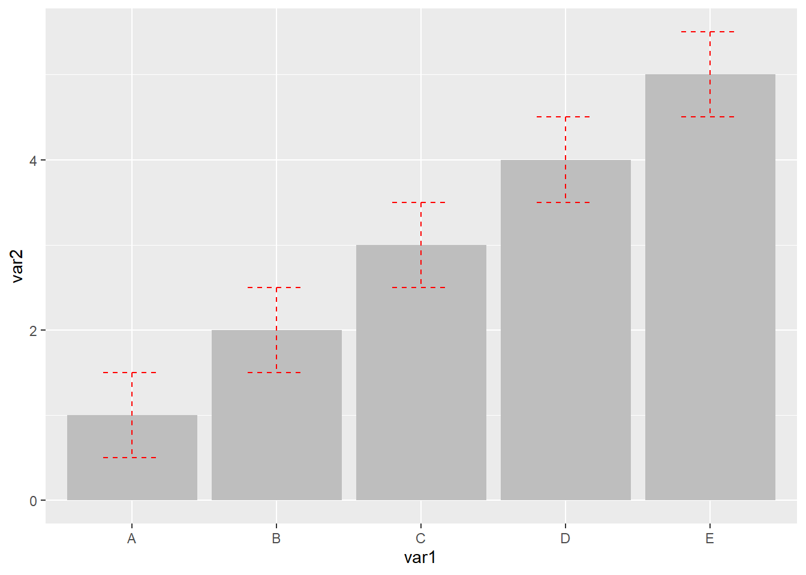
美化 更改配色
4.3.1 实际例子
library(readr)
library(tidyverse)
bechdel_test_df<-read_csv("example_data/04-barplot/bechdel_test_df.csv")##
## -- Column specification -----------------------------------------
## cols(
## year_group = col_character(),
## clean_test = col_character(),
## category_count = col_double(),
## category_prop = col_double()
## )bechdel_test_text <- read_csv("example_data/04-barplot/bechdel_test_text.csv")##
## -- Column specification -----------------------------------------
## cols(
## year_group = col_character(),
## clean_test = col_character(),
## category_count = col_double(),
## category_prop = col_double(),
## prop_cum = col_double(),
## prop_cum_lag = col_double(),
## label = col_character(),
## y = col_double()
## )bechdel_step_df <- read_csv("example_data/04-barplot/bechdel_step_df.csv")##
## -- Column specification -----------------------------------------
## cols(
## year_group = col_character(),
## category_prop = col_double(),
## x_coord = col_double(),
## x_end_coord = col_double(),
## y_coord = col_double(),
## y_end_coord = col_double()
## )library(ggplot2)
bechdel_test_df %>%
mutate(clean_test = factor(clean_test,
levels = c("ok", "dubious", "men", "notalk", "nowomen")),
clean_test = fct_rev(clean_test)) %>%
ggplot(aes(year_group, category_prop)) +
geom_col(aes(fill = clean_test), width = 1, color = "white",
size = 0.6, show.legend = FALSE) +
geom_segment(data = bechdel_step_df,
aes(x = x_coord, xend = x_end_coord,
y = category_prop, yend = category_prop),
size = 1.5) +
geom_segment(data = filter(bechdel_step_df, year_group != "2010 -\n'13"),
aes(x = x_end_coord, xend = x_end_coord,
y = y_coord, yend = y_end_coord),
lineend = "round", size = 1.5) +
geom_segment(aes(x = 0.12, xend = 9.5, y = 0, yend = 0),
size = 0.8) +
geom_segment(aes(x = 0.25, xend = 9.5, y = 1, yend = 1),
size = 0.8, color = "#cdcdcd") +
geom_segment(data = tibble(x = 0.12, xend = 0.5, y = c(0.25, 0.5, 0.75)),
aes(x = x, xend = xend, y = y, yend = y),
size = 0.8, color = "#cdcdcd") +
geom_text(data = tibble(x = 0, y = c(0, 0.25, 0.5, 0.75, 1),
label = c(0, 25, 50, 75, 100)),
aes(x = x, y = y, label = label),
family = "serif", size = 6, hjust = 1) +
geom_text(data = tibble(x = 0.2, y = 1, label = "%"),
aes(x = x, y = y, label = label),
family = "serif", size = 7, hjust = 1) +
geom_text(data = tibble(x = c(0.5, 2.5, 4.5, 6.5, 8.5),
y = -0.06,
label = c("1970-\n'74", "1980-\n'84", "1990-\n'94", "2000-\n'04", "2010-\n'13")),
aes(x = x, y = y, label = label),
family = "serif", size = 6, hjust = -0.2, lineheight = 0.55) +
geom_segment(data = bechdel_test_text,
aes(x = 9.5, xend = 9.75, y = y, yend = y),
size = 0.8) +
geom_text(data = bechdel_test_text,
aes(x = 9.85, y = y, label = label),
family = "serif", hjust = 0,
vjust = 0.5, size = 6, lineheight = 0.6) +
annotate("text", x = 3.75, y = 0.22,
label = "PASS", family = "serif",
fontface = "bold", size = 25,
hjust = 0, vjust = 0.5) +
annotate("text", x = 4, y = 0.75,
label = "FAIL", family = "serif",
fontface = "bold", size = 25, hjust = 0, vjust = 0.5) +
scale_y_continuous(expand = c(0, 0)) +
scale_fill_manual(values = c("ok" = "#008fd5", "dubious" = "#6bb2d5",
"men" = "#ffc9bf", "notalk" = "#ff9380", "nowomen" = "#ff2700")) +
labs(title = "The Bechdel Test Over Time",
subtitle = "How women are represented in movies",
x = "", y = "",
caption = "Original plot by Fivethirtyeight | Replicated in R by Kaustav Sen") +
coord_cartesian(clip = "off") +
theme_void() +
theme(
plot.title.position = "plot",
plot.title = element_text(family = "serif", face = "bold",
size = 30, hjust = -0.12, margin = margin(b = 5)),
plot.subtitle = element_text(family = "serif", size = 24, hjust = -0.12, margin = margin(b = 25)),
plot.caption = element_text(family = "serif", size = 14, hjust = 0.5, vjust = -25, color = "grey70"),
plot.margin = margin(20, 90, 25, 45),
plot.background = element_rect(fill = "#f0f0f0", color = "#f0f0f0")
)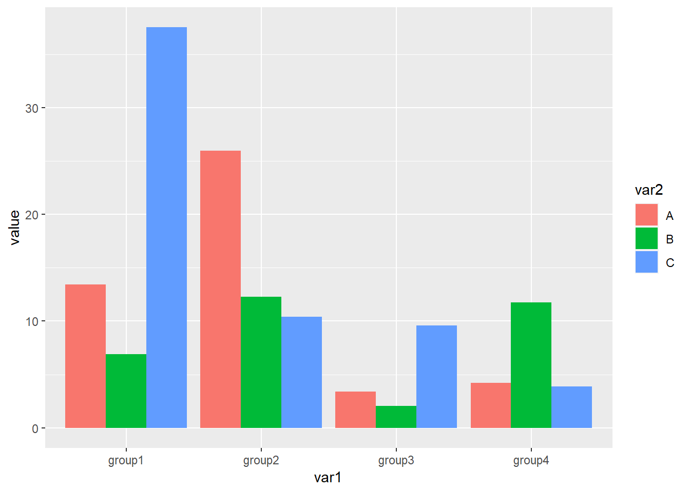